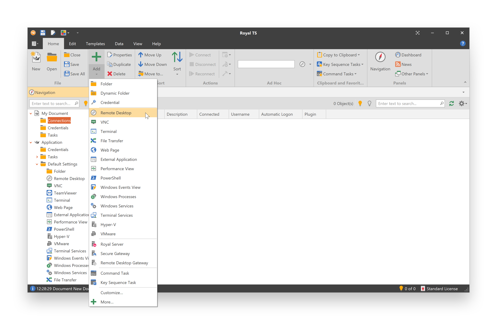

Your First Connection
Navigation in Royal TS
The Royal TS user interface provides an Office-style ribbon menu system and a Visual Studio-style dock panel workspace:
When Royal TS is opened for the first time, you will see the Application document in the Navigation panel. The application document is a special kind of document, stores important application settings (Options) and also features some out-of-the-box command tasks.
Note
You cannot add connections directly to the application document. Create your own document(s) to store connections. Your own documents can also be used to store credentials and tasks.
Create a Document
Create a new document to store your connections:

Provide a name for the document and click OK.
Create a Connection
Select the document or a folder in your document and create a new connection:

In this example we add a new remote desktop connection. Enter a display name and computer name for the new connection.
Connect
Select the connection and click Connect: